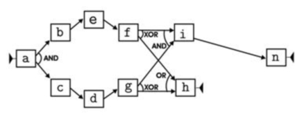
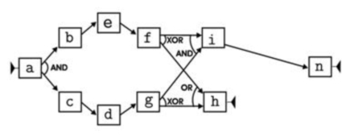
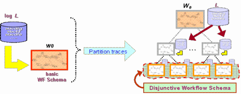
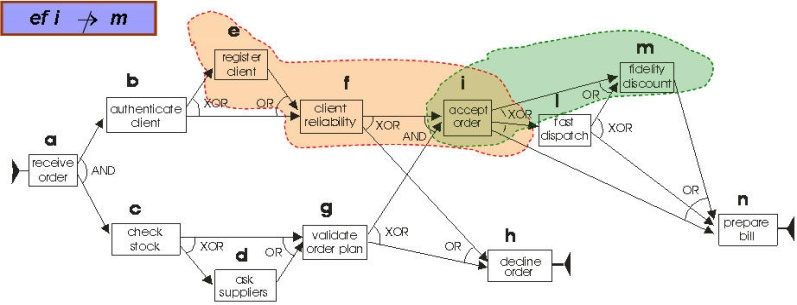
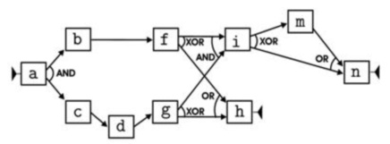
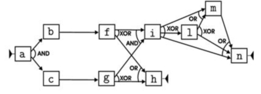
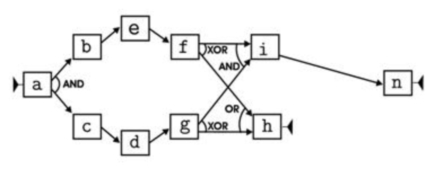
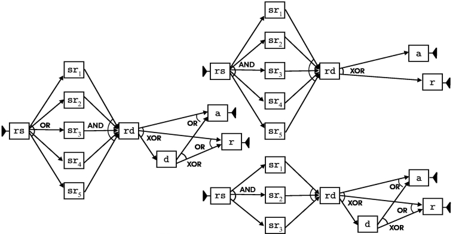
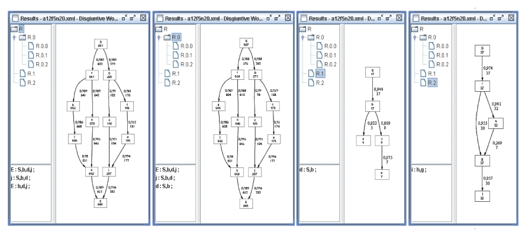

The plugin is able to discover a set of workflow models that represent different subsets of the input log, and are arranged in a browsable tree.
The mining is carried out through a top-down hierarchical clustering process, where the log is recursively split into homogeneous clusters (from a behavioral viewpoint). All discovered clusters are then equipped with a specific workflow model (by exploiting algorithm HeuristicMining provided with ProM).
Any partitioning step hence produces a refinement of the workflow model being discovered. Specific behavioral patterns, named discriminant rules, are used as features for clustering log instances by means of classical k-means algorithm.
References
[1] G. Greco, , A. Guzzo, L. Pontieri and D. Sacca . Discovering Expressive Process Models by Clustering Log Traces, IEEE Transactions on Knowledge and Data Engineering (TKDE), vol. 18 n. 8, pp. 1-15, 2006.
[2] G. Greco, A. Guzzo and L. Pontieri. Mining Correlations in Workflows Executions . in Proc. of the Third International Conference on Business Process Management (BPM05), 2005.
[3] URL: www.workflowmining.org .
The discovery of a disjunctive schema WS for a given log, is carried out in
an efficient way, through an iterative, hierarchical refinement of the process model.
The basic idea is sketeched in the following figure.

Figure 1
The approach
starts by mining a preliminary workflow schema W0, which is a first
attempt to model the whole log. This schema, along with the log traces,
corresponds to the root of a tree shown in the right side of the figure.
Iteratively, one of the schemata that have not been refined yet (i.e., that
correponds to some leaf of the tree) is refined: the set of traces that are
associated with it are split into clusters, and a new schema is eventually mined
for each of these clusters.
By the way, any classical process mining technique
could be exploited to mine any of the above workflow schemata, once homogeneous
clusters of traces have been recognized.
At the end of the process, a disjunctive process model is obtained that
consists of all the schemata at the leaves, and represents the log in a more
accurate than W0.
In order to efficiently partition a set of traces into clusters by
means of well-known
methods, we resort to a “flat” relational
representation of the traces, by projecting them onto a set of
features.
Such features, called discriminant rules, are meant to characterize
behavioral patterns which are not
properly modelled by the current workflow schema being refined.
In
particular, a discriminant rule is
a rule of the from
[a1
…ah
]
-/->
a such that:

Figure 2
If you glad, you can download the log files for the example described below at the "example" section of the www.workflowmining.org web site (or directly from the example directory of PROM) and then experencing the usage of the DWS Mining plugin on these example scenarios.
A a first example, let us consider the process of handling customers’ orders within a business company,
for which the figure 2 shows a possible workflow schema.
We randomly generated a log (downloadable at the URL: www.workflowmining.org) containing 5,000 traces, that
are all compliant with the workflow schema in Figure 2.
In addition, in the generation of the log, we also required that task m could not occur in
any execution trace containing e, and
that task l could not appear in any trace containing d. By the
way, these constraints assure that a fidelity discount is never applied to a new customer and that,
respectively, a fast dispatching procedure cannot be performed whenever some external supplies were asked for.
Let us now apply the DWS mining tool using the following values for its parameters:
sigma = 0.05
gamma = 0.01
max. nr. of clusters per split = 4
max. lenght of features = 5
max. nr. of splits = 1
max. nr. of features = 2
As a result we obtain a tree with a root and four leaves.
The schema associated with the root is just the schema in Figure 2. However, it is only a first attempt to model the whole log with a single schema. Indeed, since it does not capture the constraints discussed above, it is not a accurate enough model for the log.
The schemata of the leaves are instead reported in the following figure.
 

Figure 3
Each of the schemata in Figure 3 models a different usage scenarios of the process, and has been discovered by applying a classical process mining algorithm to a properly discovered cluster of traces.
As a whole they constitute a disjunctive workflow schema that exactly model the log, and provides for a clearer view over the latent behavior of the process.
As a further example, let us consider the process of reviewing a paper submitted to a scientific conference. The process consists of the following tasks:
Actually, in the case where the paper is authored by a program committee member, it has to be reviewed by 5 reviewers and it is immediately rejected in the case some reviewer does not want it to be accepted for publication. Otherwise, only 3 reviewers are assigned to the paper.

Figure 3
A possible workflow schema for the process is reported on the left of
Figure 3 — notice
e.g., that rs is an or-split.
According to this schema and to the above specified rules, we generated a log (downloadable at the URL: www.workflowmining.org) of 5,000 traces using a random generator.
We then applied the DWS mining tool using the same values as in the previous example for all parameters, except for the nr. of clusters per split, that we set to 2.
The two resulting schemas are shown on the right of the same figure.
It is clear that one schema models the process for papers written by a program committee member, while the other models any other case — notice that for both schemas, rs is an and-join task, now.
The examples above show that the approach is
very effective
in providing insights into a process whose enactment is constrained by some kind of rules, possibly involving information
that
is beyond
the pure execution of activities (e.g., stored in some database. This is quite a
common
situation in practical applications.
However, even in the case where no behavioral rules are
defined and,
hence, where there is only one usage scenario, the approach is
still
useful in order to identify some (hidden) variants, which correspond to
anomalies and
malfunctioning in the system. In such a case, it is possible to recognize the
“normal” behavior of the process, along with the main groups of instances that deviate
from it.
As an example, we examine the results obtained with the log file a12f5n20.xml
(a real data set available at the URL: www.processmining.org),
when setting sigma = 0.01, gamma = 0.4, feature# = 3, cluster#= 3, and featureLength = 5.
Figure 4 shows the hierarchy and the models associated with each node in the
second level of it: one large cluster R0 is discovered whose schema
coincides with that of R and then represents the typical behavior.
Conversely, both clusters R1 and R2 (containing 17 and 37 traces, respectively) may be perceived as outliers w.r.t. the
discovered main behavior.
